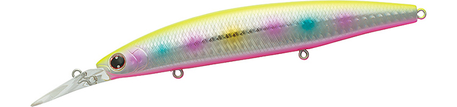
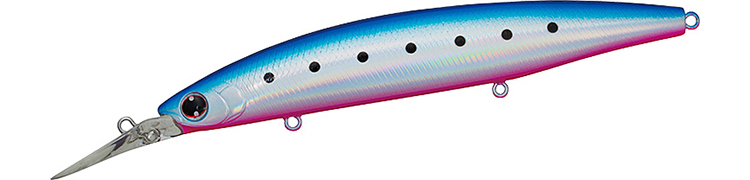
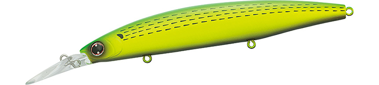
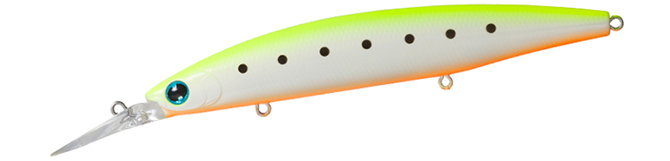
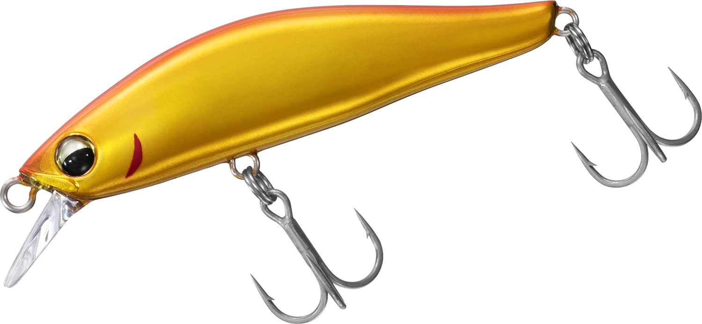

セットアッパー125S-DR
（シンキングダイバー）
セットアッパー125S-DR（ショアラインシャイナーZ セットアッパー125S-DR）はDAIWA（ダイワ）のシンキングダイバーです。
小沼正弥完全監修。堤防や磯などで、誰もが苦手にしている中層と足元を攻められる“ぶっ飛び”サーチシンキングダイバー。ロングリップミノーとは思えない飛距離と軽い引き抵抗で、「セットアッパー」という新たなカテゴリーを作ったと言われる1本です。

画像出典:DAIWA公式HP
スペック
- メーカー
- DAIWA（ダイワ）
- タイプ
- シンキングダイバー（スローシンキング）
- 全長
- 125mm
- 自重
- 26g
- 潜行深度
- 最大2mオーバー
- フック
- #6トレブル
- リング
- #3
- 飛距離
- Max79.5m／Ave77.0m（当社テスト）
- アクション
- ハイピッチタイトウォブンロール
- ターゲット
- シーバス・青物・ヒラメ・タチウオ
- 価格
- 2,200円（税抜）
▼今すぐチェック
セットアッパー125S-DRの特徴
ただ巻きだけで中層〜足元を攻め、勝手に「食わせの間」を作るロングリップシンキングダイバー
-
あえてルーズなHGSで、自動的に「食わせの間」を作る
重心移動のウエイト保持機構HGS（PAT.）をあえてルーズに設定。流れや速度の変化で自動的にウエイトが「保持⇔外れる」を繰り返し、ルアーがランダムにバランスを崩すことで「食わせの間」が生まれる。
-
ロングリップなのにぶっ飛ぶキャスタビリティ
「サイレントウエイトオシレートシステム」とHGS、ボディに隠れるエアロリップの組み合わせで、ロングリップミノーの概念を超えた飛距離を実現。125S-DRは当社テストで平均77.0mを記録している。
-
水平姿勢のスローシンキングで、足元まで中層をトレース
ロングリップながらほぼ水平姿勢でアクションするため、昼間でも見切られにくい。引き心地が軽くレンジキープ力も高いので、足場の高い場所でも足元まで水面下をしっかりトレースできる。
セットアッパー125S-DRの使い方
基本はただ巻きのみでOK。スローリトリーブではハイピッチタイトウォブンロール、スピードを上げると徐々にワイドウォブンロールに変化し、時折自動で横方向へのスライド（チドリアクション）が混じる。
着水後のカウントダウンとロッド操作、リトリーブスピードで最大2mオーバーまでのレンジをコントロール。裏技として、引き波の力を利用して堤防や磯際の中層にルアーをとどまらせたまま泳がせ続けるテクニックも効果的です。
セットアッパー125S-DRの得意な状況
足場の高い堤防や磯で、中層〜足元に潜むシーバスを攻めたい状況が最大の出番。
バイブレーション系にスレて待ち伏せしている居着きの魚や、ボートゲームで中層を引きたい場面でも強い。表層のミノーとボトムのバイブレーションの間を埋めたい時に選びたい1本です。
ワンポイント
マヅメ時や濁り潮、ナイトゲーム、オープンエリアの第一投には、エラ部分にラトルを内蔵したラトリンカラーが効果的です。
125S-DRのラトリン太刀グローイワシはナイトゲームが主流のタチウオゲームにも対応します。
セットアッパーS-DRシリーズの使い分け
| モデル | 全長／自重 | 得意な場面 |
|---|---|---|
| 75S-DR | 75mm／13g | 小型ベイト・最大1.5mオーバー・MAGLOCK搭載 |
| 97S-DR | 97mm／18g | コンパクトなベーシックサイズ・最大1.5mオーバー |
| 110S-DR | 110mm／22.6g | 125のダウンサイジング・スレた状況やサーフのヒラメに |
| 125S-DR | 125mm／26g | シリーズの中核・最大2mオーバー・Ave77.0m（本記事のモデル） |
| 145S-DR | 145mm／39g | シリーズ最大・Ave88.5mの遠投と大型ベイトに |
セットアッパーS-DRは75S-DR〜145S-DRの5サイズ展開。ベイトサイズと必要な飛距離・レンジでサイズを選び、125S-DRはその中でも飛距離とレンジのバランスが取れた中核モデルだ。
オススメカラー
セットアッパー125S-DRは豊富なカラーを展開。オススメのカラーを厳選して紹介します。

不夜城常夜灯周りのナイトゲームで定番のカラー。夜の港湾部シーバスに。

ブルピンイワシ青物・シーバス両方に使いやすい定番イワシ系。デイゲームの1本目に。

ライムチャートコノシロコノシロパターンに視認性をプラス。濁りやローライト時に。

ラトリン太刀グローイワシラトル入りのグローカラー。タチウオのナイトゲームやアピール重視の場面に。
画像出典:DAIWA公式HP
セットアッパー125S-DRに似ているルアー
-

カマスハンター ダイワ 詳細はこちら＞同じダイワのシンキングミノー。ただ巻きで中層を引いて食わせるという使い方が近く、カマスなど小型の回遊魚狙いでセットアッパーと使い分けたい1本。
-
 ヨイチ120クロスオーバー
アイマ
詳細はこちら＞
ヨイチ120クロスオーバー
アイマ
詳細はこちら＞
120mmクラスのシンキングミノー。遠投して中層を広く探るという狙いどころが、セットアッパー125S-DRと重なる。